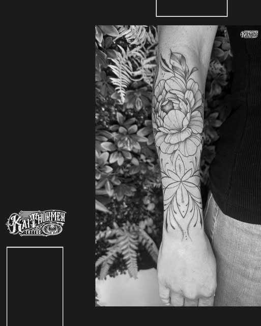
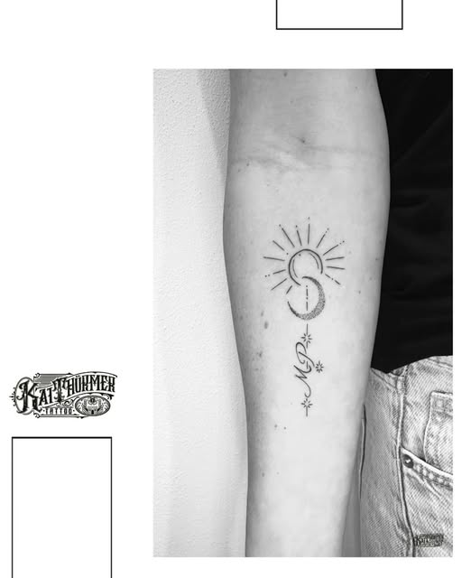
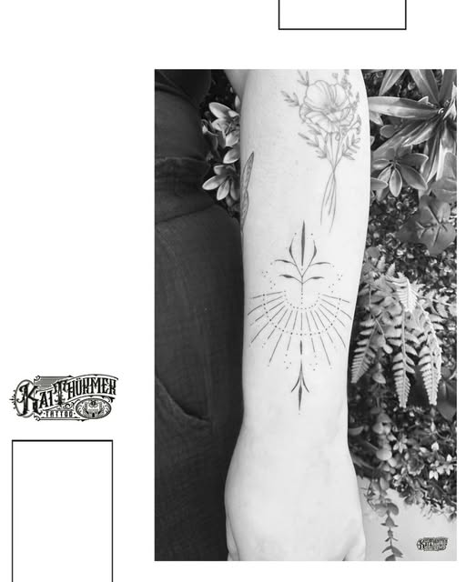
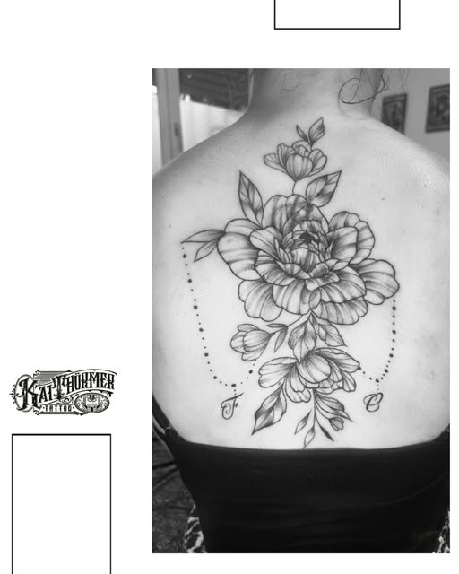
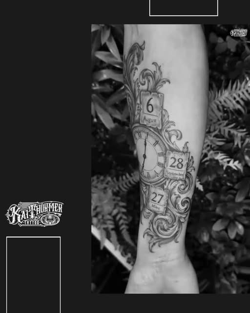
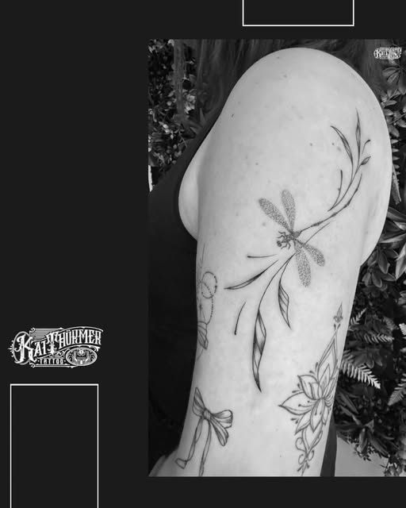

Blackwork
Satte Flächen, starke Silhouetten und klare Kontraste.
Originalarbeit · Instagram-Portfolio
Tattooing since 2006
Deine Idee. Dein Tattoo. Individuell umgesetzt.Wir besprechen Motiv, Entwurf und Termin persönlich – online oder in der Hellen Halle.
Von satten Flächen bis zu feinen Linien: Die Auswahl gibt dir einen ersten Eindruck von meinen gestalterischen Schwerpunkten.

Satte Flächen, starke Silhouetten und klare Kontraste.
Originalarbeit · Instagram-Portfolio

Tiefe und Struktur aus präzise gesetzten Punkten.
Originalarbeit · Instagram-Portfolio

Detailreiche Motive mit Linie, Haut und Freiraum.
Originalarbeit · Instagram-Portfolio

Radiale Ordnung, Rhythmus und Dichte im Zentrum.
Originalarbeit · Instagram-Portfolio

Schriftzüge mit eigener Formensprache.
Originalarbeit · Instagram-Portfolio

Feine Linien und punktierte Schattierung mit viel Freiraum.
Originalarbeit · Instagram-Portfolio
Seit 2006 zeichne und tätowiere ich individuelle Motive. Mein Handwerk habe ich in Frankfurt am Main gelernt. Nach zehn Jahren im Studio 86 führe ich heute mein eigenes Studio in der Hellen Halle.
Aus deinem Gedanken entsteht ein Motiv, das zu dir und deiner Körperstelle passt.
Du musst noch nichts fertig haben. Ein paar Stichworte, eine Körperstelle oder Referenzen reichen für den Anfang.
Schick mir ein paar Stichworte, die Körperstelle oder erste Referenzen.
Wir sortieren Stil, Größe, Platzierung und alles, was dein Motiv braucht.
Wenn alles passt, legen wir den Termin im Studio fest.
Schick mir Motiv, Körperstelle und Referenzen. Den Rest entwickeln wir im Austausch.